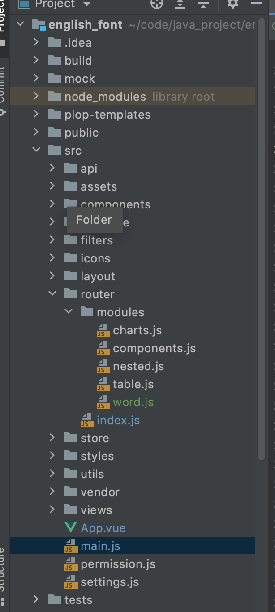

vue的开发流程
一、准备
我这里采用的是vue-element-admin进行，这样就不用自己搭建底层进行。
二、项目层级

package.json 是npm 的包管理工具的配置文件
- scripts 脚本执行
- Dependencies 依赖的外包
App.vue 程序入口
<template> <div id="app"> <router-view /> </div> </template> <script> // vue项目入口，向外暴露了 export default { name: 'App' } </script>main.js
这里会new Vue，来启动vue项目。当然也会引入很多的依赖，加载路由文件
import Vue from 'vue'
import Cookies from 'js-cookie'
import 'normalize.css/normalize.css' // a modern alternative to CSS resets
import Element from 'element-ui'
import './styles/element-variables.scss'
import enLang from 'element-ui/lib/locale/lang/en'// 如果使用中文语言包请默认支持，无需额外引入，请删除该依赖
import '@/styles/index.scss' // global css
import App from './App'
import store from './store'
import router from './router'
import './icons' // icon
import './permission' // permission control
import './utils/error-log' // error log
import * as filters from './filters' // global filters
import countTo from 'vue-count-to'
/**
* If you don't want to use mock-server
* you want to use MockJs for mock api
* you can execute: mockXHR()
*
* Currently MockJs will be used in the production environment,
* please remove it before going online ! ! !
*/
if (process.env.NODE_ENV === 'production') {
const { mockXHR } = require('../mock')
mockXHR()
}
Vue.use(Element, {
size: Cookies.get('size') || 'medium', // set element-ui default size
locale: enLang // 如果使用中文，无需设置，请删除
})
// register global utility filters
Object.keys(filters).forEach(key => {
Vue.filter(key, filters[key])
})
Vue.config.productionTip = false
Vue.component('countTo', countTo)
new Vue({
el: '#app',
router,
store,
render: h => h(App)
})
二、路由注册
1、在router下面新建一个文件夹，用来存放自己的页面路由
2、在router的index.js中引入自己的路由。因为这个文件是在main.js 中全局加载的。
// main.js 中导入router
import router from './router'